화약류관리산업기사 (2006-03-05 기출문제)
1과목: 일반화약학
1. 질화납에 대한 설명으로 가장 옳은 것은?
- 혼합화약류에서 여감제로 많이 사용된다.
- 흡습성이 강하며 물속에서는 폭발하지 않는다.
- 기폭약으로 사용된다.
- 600kg/cm2의 압력을 받으면 시압된다.
(정답률: 알수없음)

2. 교질다이나마이트의 동결(凍結)을 방지하기 위하여 혼합하는 물질은?
- 니트로글리세린
- 니트로글리롤
- 니트로글리세롤
- 니트로벤젠
(정답률: 알수없음)
3. 장수폭약의 발열제로 가장 적당한 것은?
- 알루미늄가루
- 철가루
- 구리가루
- 규소철가루
(정답률: 알수없음)
4. 다음 화약류 중 자연분해의 경향이 없는 것으로만 구성되어 있는 것은?
- 흑석화약, 무연화약, 피크린산
- 니트로글리세린, 니트로글리콜, 니트로셀룰로오스
- 질산암모늄 유제폭약, 아지화낭(Lead Azide), TNT
- 데트힐, DDNP, 다이나마이트
(정답률: 알수없음)
5. 정적위력시험과 관계가 없는 것은?
- 순폭시험
- 연주시험
- 단동진자시험
- 탄동구포시험
(정답률: 알수없음)
6. 공정중 비산된 PETN을 폐기처리 하고자 한다. 어떤 방법이 가장 좋은가?
- 아세톤에 용해 후 소각한다.
- 아세톤에 용해 후 폐수처리장에 보낸다.
- 질산을 소량 가하여 자연분해 시킨다.
- 몸에 흡수시켜 뇌관으로 기폭처리 한다.
(정답률: 알수없음)
7. 다음 중 헥소겐(PDX)의 용도가 아닌 것은?
- 전폭약
- 공엽뇌관의 청장약
- 도화선의 심약
- 도폭선의 심약
(정답률: 알수없음)
8. 다음 중 화약류와 관련한 화학결합 물질이 아닌 것은?
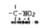
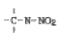
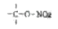
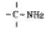
(정답률: 알수없음)
9. 다음 중 화공품이 아닌 것은?
- 신관 및 화관
- 시동약
- 자동차 에어백용 가스발생기
- 카알릿
(정답률: 알수없음)
10. 다음 폭약 원료 중 흡수성이 가장 강한 물질은?
- 질산바륨
- 질산암모늄
- 염화나트륨
- 과염소산염
(정답률: 알수없음)
11. 다음 화약류 중 산소를 가장 많이 발생하는 물질은?
- 염소산칼륨
- 질산칼륨
- 과염소산칼륨
- 과염소산 암모늄
(정답률: 알수없음)
12. 뇌홍의 주원료는 다음 물질 중 어느 것인가?
- Al
- Ag
- Hg
- Cu
(정답률: 알수없음)
13. 다음 중 전폭약으로 사용되지 않는 것은?
- Tetryl
- PETN
- RDX
- DONP
(정답률: 알수없음)
14. 공업용 피크린산의 색상은?
- 백색
- 황색
- 적색
- 흑색
(정답률: 알수없음)
15. 뇌관의 위력시험과 관계가 없는 것은?
- 납판시험
- 둔성폭약시험
- 뭇시험
- 순폭시험
(정답률: 알수없음)
16. 다음 중 도화선의 심약으로 사용되는 것은?
- 흑색화약
- 다이너마이트
- 목탄
- 유황
(정답률: 알수없음)
17. 흑색 화약(Black powder)에 대한 설명 중 옳은 것은?
- 폭발 반응 후 CO가스 등이 발생치 않아 경내 폭파에 적당하다.
- 마찰, 충격 등에 민감하므로 뇌관을 사용치 않고 폭발시킬 수 있다.
- 화학적으로 안정하며, 습기 중에도 장기간 저장이 가능하다.
- 조성물은 KNO3, C뿐이다.
(정답률: 알수없음)
18. 다이너마이트를 저장 중 악포에서 니트로글리세린이 침출되어 외부상자를 오염시켰을 때 처리방법으로 가장 적절한 것은?
- 50℃이하의 온수로 처리함
- 가성소다와 알코올 수용액으로 분해처리
- 물로 세척함
- 연소시킨다.
(정답률: 알수없음)
19. 위험공실에 900kg 의 폭약을 저장하려고 할 때 3중 보안 물건 간의 보안거리는? (단, 정제량(폭약)400kg에 대한 제3종 보안물건 간의 보안 거리는 90m이다.)
- 115m
- 125m
- 135m
- 145m
(정답률: 알수없음)
20. 니트로글리세린을 교화해서 겔(gel)상으로 제조하는 것을 교화제라 한다. 교화제로 사용되는 물질은?
- CH3ONO2
- CH3COCH3
- C2H5NO2
- C5H6
(정답률: 알수없음)
2과목: 발파공학
21. 공내에 장전된 폭약이 그 약포와 장약공 사이에 공극이었으면 어느 조건하에서는 폭굉이 전파하지 않고 도중에서 중단되는 것을 무엇이라고 하는가?
- 측백효과(Channel effect)
- 순폭강도(Gap sensetivity)
- 디커플링 지수(Decoupling index)
- 스팔링 효과(Spalling effect)
(정답률: 알수없음)
22. 암석의 발파특성과 가장 쉽게 대응하는 단위로 어떤 감도를 갖는 한 폭약의 암석체적에 대한 양을 말하는 것은?
- 장전밀도
- 비장약량
- 중장약량
- 암석계수
(정답률: 알수없음)
23. 발파진동의 전파특성을 결정짓는 조건은 크게 입지조건과 발파조건으로 나눌 수 있다. 다음 중 발파조건에 해당하지 않는 것은?
- 폭약의 종류
- 자유면의 수
- 암반의 역학적 특징
- 폭발원과 측정간의 거리
(정답률: 알수없음)
24. 노동부고시 표준안전 작업지침에서 발파구간 인접구조물에 대한 피해 및 손상을 예방하기 위하여 주택, 아파트의 기초에서의 허용 진동기준치는 얼마로 제한되어 있는가?
- 0.2cm/sec
- 0.5cm/sec
- 1.0cm/sec
- 1.0 - 4.0cm/sec
(정답률: 알수없음)
25. 다음 중 인장파괴이론을 설명한 것으로 틀린 것은?
- 충격파의 파장이 짧을수록 두꺼운 판상으로 파괴된다.
- 충격파의 강도가 암석의 인장강도보다 클수록 많은 판모양으로 파괴된다.
- 폭약의 폭굉압은 10만기압 정도이니 이것은 폭약의 종류, 장전밀도, 폭속에 따라 달라진다.
- 인장파괴이론은 홉킨스 효과(Hopkinson effect)로 설명이 가능하다.
(정답률: 알수없음)
26. 대구경 평행 실빼기(cylinder cut)에 있어 장약공의 직경 d=33 mm, 공공의 직경 ø=100mm 장약공의 중심과 공공의 중심시미거리 λ=150mm로 할 때 장약공에 필요한 장약 밀도는?
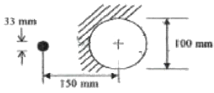
- 0.138 kg/m
- 0.276 kg/m
- 0.414 kg/m
- 0.552 kg/m
(정답률: 알수없음)
27. 다음 중 경사천공의 장점이 아닌 것은?
- 자유면 반대방향의 후면 파괴 감소
- 정확한 경사각 유지 용이
- 1자유면에서 문제성 감소
- 양호한 파쇄율(낮은 계단 발파)
(정답률: 알수없음)
28. 갱도발파에서 가로, 세로가 각각 2.1m×2.1m, 공경 32mm로 20공을 천공하여 1m 굴진하는데 최소저항선을 48cm로 하여 표준 발파가 시행되었다. 만일 같은 암석에 갱도규모를 2.1m×1.8m 크기로 하고, 90cm 굴진하려면 필요한 공수는?
- 10공
- 12공
- 15공
- 20공
(정답률: 알수없음)
29. 다음 중 시험발파 목적으로 가장 거리가 먼 것은?
- 현장에 적합한 발파 진동 추정식 설정
- 현장에 적합한 발파패턴 산정
- 적정장약량 산출을 통한 안전하고 효율적인 발파 공사 수행
- 화약류 양수·양도허가를 특하기 위하여 실시하는 발파
(정답률: 알수없음)
30. 1.5m3의 채석량을 얻는데 125g의 폭약이 소모 되었다면 3.0m3의 채석에 필요한 폭약량은?
- 250g
- 225g
- 200g
- 175g
(정답률: 알수없음)
31. T.N.T 1kg을 공기중에서 폭발시켰을 경우 거리 25cm 지점에서 충격음의 강도는? (단, Peak 압은 0.024atm)
- 60dB
- 120dB
- 142dB
- 162dB
(정답률: 알수없음)
32. 전기 발파시 주의할 점이 아닌 것은?
- 발파모선의 길이는 되도록 길게하되 최소 비산거리 이상이 되도록 한다.
- 저항측정기로 회로내 저항시험을 실시한다.
- 도통시험은 발파시 첫회 발파 때 1회만 실시한다.
- 뇌관의 각선근처는 파손이 심하므로 보조모선을 사용한다.
(정답률: 알수없음)
33. 역기폭이 정기폭에 비해 유리한 점 중 잘못된 것은?
- 잔류공을 남기는 일이 적다.
- 발파위력이 내부에서 더욱 크게 작용한다.
- 장공발파시 효과가 크다.
- 충격파 자유면에 도달하는 시간이 빠르다.
(정답률: 알수없음)
34. 잔류약의 발생원인이 되지 않는 것은?
- Cut off
- Channel effect
- 화약사이 이물질(異物質) 혼합
- 과장약
(정답률: 알수없음)
35. 벤치 발파시의 천공길이를 결정하는 일반적인 방법은 다음 중 어느 것인가? (단, H: 계단의 높이, D: 천공장, W: 최소저항선)
- D = H + 0.3W
- D = 0.5H + 0.3W
- D = H + 0.2W
- D = 0.5H + 0.2W
(정답률: 알수없음)
36. 결선방법 중 옳지 않은 것은?
- 각선은 결선할 각 끝부분을 5cm 정도 껍질을 벗기고 5회이상 돌려감아 단단하게 결선한다.
- 각선과 모선의 결선은 모선의 끝껍질을 벗긴 부분(5cm 정도)에 각선의 끝껍질을 벗긴 부분(10cm 이상) 을 10회이상 감아 결선한다.
- 모선 상호간의 결선은 각 모선 끝을 5cm 정도씩 껍질을 벗긴 다음 결속선으로 단단히 결속한다.
- 도폭선과 도폭선의 결선 시 도폭선의 분기방향이 발파 진철방향과 반대가 되도록 결선한다.
(정답률: 알수없음)
37. 다음 중 ANFO 장전작업에 대한 설명으로 틀린 것은?
- 장전호스는 가급적 계속 연결한 호스를 사용한다.
- 장전호스는 발파공의 길이보다 60cm 이상 긴 것을 사용한다.
- 장전할 때는 장전기를 충분히 접지한다.
- 장약중에는 발파공에서 ANFO의 분출이 없도록 한다.
(정답률: 알수없음)
38. 터널발파를 위한 폭약의 선정 시 고려하여야 할 요소 중 가장 중요하지 않은 것은?
- 작업원의 수
- 발파 후 발생 가스
- 내수성
- 암반의 강도
(정답률: 알수없음)
39. 시험발파에서 최소저항선 1m, 0.6kg의 장약량으로 누두지수 0.8을 얻었다. 같은 장소에서 표준장약량을 구하면 몇 kg인가?
- 0.40kg
- 0.52kg
- 0.75kg
- 0.91kg
(정답률: 알수없음)
40. 발파에 의한 비석의 종류는 일반적으로 크게 3가지로 나눌 수 있는데 이에 속하지 않는 것은?
- 타진비석
- 철포비석
- 흡출비석
- 과장약비석
(정답률: 알수없음)
3과목: 암석역학
41. 현지 암반내에서의 탄성파속도는 2400m/sec이고 그 암반에서 채취한 균열이 없는 암석 코아에 대하여 측정한 탄성파 속도는 3600m/sec이었다. 이 암반의 탄성파 속도지수는 얼마인가?
- 0.44
- 0.65
- 2.25
- 4.4
(정답률: 알수없음)
42. 암반의 강도를 계산하기 위하여 Hoek-Brown의 경험식을 사용할 때 필요한 상수 m과 s를 추정하기 위하여 사용할 수 있는 체계는?
- ROD
- JRC
- TCR
- RMFI
(정답률: 알수없음)
43. 역학적 거동을 모사하는 물체 중 하중을 서서히 증가시킬 때 응력이 일정수준에 도달하기 전 까지는 탄성 변형물, 이후는 소성 변형을 하여 다시 원상으로 회복되지 않는 것은?
- St. Venant 물체
- Bingham 물체
- Voigt 물체
- Maxwell 물체
(정답률: 알수없음)
44. 평면변형물상태에서 x면에 작용하는 응력(σx)이 20MPa, y면에 작용하는 응력(σy)이 30MPa이다. 이 때 포아송비(v)가 0.2라면 z방향의 응력은 몇 MPa인가?
- 0
- 5
- 10
- 15
(정답률: 알수없음)
45. 취성파괴를 보이는 암석이 연성파괴가 되기 위한 조건을 맞게 나열한 것은?
- 저온, 저압, 변형속도 감소
- 저온, 고압, 변형속도 증가
- 고온, 고압, 변형속도 증가
- 고온, 고압 변형속도 감소
(정답률: 알수없음)
46. 암반분류법인 Q-system에 대한 설명으로 옳지 않은 것은?
- 0값은 0.001에서 1000사이의 값으로 대수스케일을 갖는다.
- 터널 지보의 설계에 작용이 용이하다.
- 외부 응력조건을 고려한다.
- 불연속면의 방향을 고려한다.
(정답률: 알수없음)
47. 단축압축 하중 상태의 변형공동에서 Y축 하중방향과 90˚인 지점(측벽부)에서 발생하는 최대 접선응력은 작용응력의 몇 배가 되는가?
- 1배
- 2배
- 3배
- 4배
(정답률: 알수없음)
48. 그림과 같이 직사각형 단면을 갖는 각주 시험편으로 횡시형(bending tersl)을 하였을 때 압축응력이 가장 크게 발생하는 부분은?
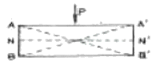
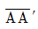
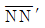

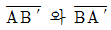
(정답률: 알수없음)
49. 탄성문에제 있어서 모든 응력이 한 평면에 평형하게 작용하면 평면응력 문제로 가정하여 간단히 해결할 수 있다. 다음 평면응력식 중 잘못 표현된 것은 어느 것인가?
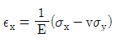
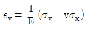
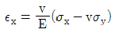
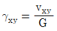
(정답률: 알수없음)
50. 어느 암석의 시면에 일축 압축하중을 가하여 변형률이 0.002였다. 이 시편의 단위 체적속에 축적된 탄성 변형율 에너지는 얼마인가? (단, 탄성계수는 2.5×105kg/cm2이다.)
- 5.0×10-1kg/cm2
- 4.0×10-1kg/cm2
- 3.0×10-1kg/cm2
- 2.0×10-1kg/cm2
(정답률: 알수없음)
51. 다음 중 풍화에 대한 암석의 내구성을 측정하는 시험방법은?
- slake durability test
- schmidt hemmer test
- shore hardness test
- point load test
(정답률: 알수없음)
52. 현장 암반의 변형성을 측정하기 위한 시험방법이 아닌 것은?
- 공내재하시험
- 평판재하시험
- 압력터널시험
- 수입파쇄시험
(정답률: 알수없음)
53. 암석에 한번 가한 하중을 제거하고 다시 같은 방향으로 하중을 가하면 전회에 가한 하중 이상으로 가할 때까지 미소균열(Acoustic Emission)이 거의 발생하지 않는 효과는?
- 카이저 효과
- 노이만 효과
- 그리피스 효과
- 줄통 효과
(정답률: 알수없음)
54. 암석의 역학적 성질 중에서 크리프(creep)현상이란?
- 응력-변형률이 비례하는 현상
- 일정한 변형율하에서 응력이 시간에 따라 증가하는 현상
- 일정한 응력하에서 변형율이 시간에 따라 증가하는 현상
- 응력-변형률이 반비례하는 현상
(정답률: 알수없음)
55. 다음과 같이 Protodjakonow의 1면 전단시험시 전단면에 작용하는 수직응력 및 전단응력은? (단, Dice의 경사각은 수직과 30도이고, 시험면의 밑면은 5㎝×4㎝, 높이는 6cm, 파괴하중은 4.000kgf이었다.)
- σ=173kgf/cm2, r=100kgf/cm2
- σ=115kgf/cm2, r=67kgf/cm2
- σ=100kgf/cm2, r=173kgf/cm2
- σ=67kgf/cm2, r=115kgf/cm2
(정답률: 알수없음)
56. 다음 중 극한평형법을 이용하여 안전율을 계산할 수 없는 사면파괴 유형은?
- 전도파괴
- 원호파괴
- 평면파괴
- 쐐기파괴
(정답률: 알수없음)
57. 암석의 파괴기준 중 Tresca 이론을 설명한 것으로 맞지 않는 것은?
- 인장강도와 압축강도의 크기가 같게 계산된다.
- 중간주응력을 고려하지 않는다.
- 물체가 전단응력에 의하여 파괴된다고 가정한다.
- 전단강도를 설명하기 위하여 마찰각과 정착강도가 필요하다.
(정답률: 알수없음)
58. 도면과 같은 응력-변형률 기둥을 보이는 물체는?
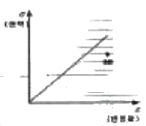
- 완전 소성체
- 완전 점성체
- 완전 탄성체
- Maxwell 물체
(정답률: 알수없음)
59. 초기지압에 대한 설명 중 틀린 것은?
- 주로 암반의 자중에 의해서 발생한다.
- 1차 지압이라고도 한다.
- 연직응력은 항상 수평응력보다 크다.
- 암반에 공동을 굴착하면 초기지압은 변화한다.
(정답률: 알수없음)
60. 폭 볼트의 적정 시공 여부를 검사하기 위한 시험은?
- 굴곡시험
- 인발시험
- 잭 시험
- 관입 시험
(정답률: 알수없음)
4과목: 화약류 안전관리 관계 법규
61. 초유폭약에 의한 발파의 기술상 기준의 설명으로 잘못된 것은?
- 기폭량에 적합한 전폭약을 같이 사용한 것
- 발파장소에서는 발파가 끝난 후 발생하는 가스에 주의할 것
- 뇌관이 달린 폭약은 장전용 호스로 조심스럽게 장전할 것
- 가연성 가스가 0.5%이상이 되는 장소에서는 발파 하지 아니할 것
(정답률: 알수없음)
62. 1급저장소에 폭약 20톤을 저장하고자 한다. 공원이 있을 경우 보안거리는 얼마 이상 두어야 하는가?
- 140m
- 220m
- 380m
- 440m
(정답률: 알수없음)
63. 화약류관리보안책임자 연하중에 대한 설명으로 옳지 않은 것은?
- 화약류관리보안책임자 면허소지자가 주민등록상의 주소의 변형이 있을 시에는 즉시 관할 경찰서에 신고해야 한다.
- 면허증을 분실하였을 때에는 면허관청에 신고하여 다시 교부받을 수 있다.
- 면허정지 또는 취소처분을 받은 때에는 지체 없이 허가 관청 또는 면허관청에 반납해야 한다.
- 면허증을 분실했을 경우에는 허가청에 재교부신청서와 함께 분실경위서를 첨부하여 제출해야 한다.
(정답률: 알수없음)
64. 화약류판매업자가 판매할 목적으로 화약류 양수 허가를 받지 아니한 사람에게 제품을 양도했을 경우의 행정처분기준은? (단, 위반회수는 3회로 한다.)
- 1월 효력정지
- 3월 효력정지
- 6월 효력정지
- 허가취소
(정답률: 알수없음)
65. 화약류를 양도·양수하려는 사람은 누구의 허가를 받아야 하는가?
- 영업지 관할 지방경찰청장
- 영업지 관할 경찰서장
- 주소지 관할 경찰서장
- 사용지 관할 지방경찰청장
(정답률: 알수없음)
66. 화약과 비슷한 추진적 폭발에 사용될 수 있는 것으로서 대통령령이 정하는 것 중 내용이 틀린 것은?
- 과염소산염을 주로 한 화약
- 황산알루미늄을 주로 한 화약
- 과산화바륨을 주로 한 화약
- 질산나트륨을 주로 한 화약
(정답률: 알수없음)
67. 화약류의 저장·취급방법으로 옳은 것은?
- 화약류는 절대로 저장소 이외의 장소에는 저장해서는 안된다.
- 화약 또는 폭약과 포장된 실탄은 동일 저장소에 저장이 가능하다.
- 저장중인 다이나마이트 등의 약포에서 니트로글리세린이 스며 나와 마루 바닥을 오염시킨 때에는 물 100ml에 가성소다 150g을 녹이고 알콜 1ℓ로 혼합한 혼합물로 이를 분해시키고 마른걸레로 닦아낸다.
- 수중저장소에서 가루로 된 화약류를 저장시에는 10%정도의 물기를 머금게 하고, 물이 스며들 수 없게 포장하여 나무상자에 넣고 덩어리 화약류는 물에 항상 잠긴 상태로 저장한다.
(정답률: 알수없음)
68. 위험공실의 시설기준에 관한 사항 중 거리가 먼 것은?
- 내화성 건물로 하여 별채로 할 것
- 규정에 의한 피뢰장치를 할 것
- 위험공실의 부근에는 저수지·저수조 등 불을 끄는 데 필요한 설비를 갖출 것
- 위험공실면에는 온도 및 습도의 조정장치를 설치할 것
(정답률: 알수없음)
69. 보안물건의 정의에 대한 설명이다. 맞는 것은?
- 화약류 취급상의 위해로부터 보호가 요구되는 장비, 시설 등
- 화약류를 사용하는데 필요한 안전거리내의 시설물 등
- 화약류를 사용하는 장소부근의 시설물 등
- 화약류를 운반, 사용하는 장소로부터 근거리의 시설물 등
(정답률: 알수없음)
70. 화약류의 운반신고를 하지 아니하거나 거짓으로 신고한 사람의 처벌로 맞는 것은?
- 300만원 이하의 과태료
- 5년 이하의 징역 또는 1000만원 이하의 벌금형
- 3년 이하의 징역 또는 700만원 이하의 벌금형
- 2년 이하의 징역 또는 500만원 이하의 벌금형
(정답률: 알수없음)
71. 안정도시험에 사용하는 것과 거리가 먼 것은?
- 정제활석분
- 표준색지
- 적색 리트머스 시험지
- 옥도가리 전분지
(정답률: 알수없음)
72. 화약류의 사용허가신청에 관한 구비서류에 속하는 것은? (단, 꽃물류외의 화약류에 한함)
- 화약류저장소 위치
- 사용순서대장
- 사용계획서
- 사용장소 및 그 부근약도
(정답률: 알수없음)
73. 화약류 운반신고를 하지 않고 운반할 수 있는 화약류 수량으로 틀린 것은?
- 총용뇌관 10만개
- 폭약 25kg
- 미진동파쇄기 5,000개
- 도폭선 1,500m
(정답률: 알수없음)
74. 화약류 판매업의 시설기준으로 잘못된 사항은?
- 자기전용의 화약류 저장소를 설치할 것
- 화약류 저장소에는 차량에 의한 안전운반이 가능하도록 저장소 입구까지 진입로를 개설할 것
- 화약류 저장소 주위에 도난방지 등을 위한 경비초소를 설치할 것
- 판매업소 및 화약류저장소의 위치는 유통과정에 있어서 위험성이 없는 곳일 것
(정답률: 알수없음)
75. 다음 중 물류 저장소의 위치, 구조 및 설비기준에 맞지 않는 것은?
- 단층 콘크리트, 블록조로 하고, 기초는 지면보다 낮게 한다.
- 저장소 벽의 두께는 콘크리트조일 때 10cm 이상 으로 한다.
- 저장소의 마루 밑에는 지상 1급 저장소에 준하는 환기통을 저장소의 크기에 따라 2개 이상 설치한다.
- 저장소 주위에는 흙둑, 간이흙둑 또는 방폭벽을 설치한다.
(정답률: 알수없음)
76. 화약류 저장소에 폭약 40톤을 저장하는 경우 지반의 두께 기준으로서 옳은 것은? (단, 지하 1급 저장소임)
- 29m 이상
- 28m 이상
- 25m 이상
- 24m 이상
(정답률: 알수없음)
77. 쏘아 올리는 꽃물류를 발사통안에 넣을 때 가장 옳은 방법은?
- 손으로 밀어 넣는다.
- 끈을 사용하여 서서히 내려 넣는다.
- 물로 섞어서 흘려 넣는다.
- 다짐 봉으로 걸어 넣는다.
(정답률: 알수없음)
78. 태발파의 기술상의 기준 중 발파하고자 하는 장소에서 미리 검토하고 정하는 사항과 거리가 먼 것은?
- 대피 인원
- 약실의 위치
- 폭약의 양
- 갱도의 폐쇄
(정답률: 알수없음)
79. 화약류 취급소의 정체량 중 맞는 것은? (단, 1일 사용예정량 이하)
- 화약 800kg
- 전기뇌관 3500개
- 도폭선 6km
- 폭약(초유폭약 제외) 450kg
(정답률: 알수없음)
80. 화약류 취급에 있어서 옳지 않은 것은?
- 사용하고 남은 화약류는 취급소에 반납 보관한다.
- 도통·저항시험의 시험전류는 0.01A를 초과해서는 안된다.
- 낙뢰의 위험이 있을 때는 전기뇌관 또는 전기도화선을 사용치 않는다.
- 얼어서 굳어진 다이나마이트는 섭씨 30도 이하의 온도를 유지하는 실내에서 누그러 뜨린다.
(정답률: 알수없음)